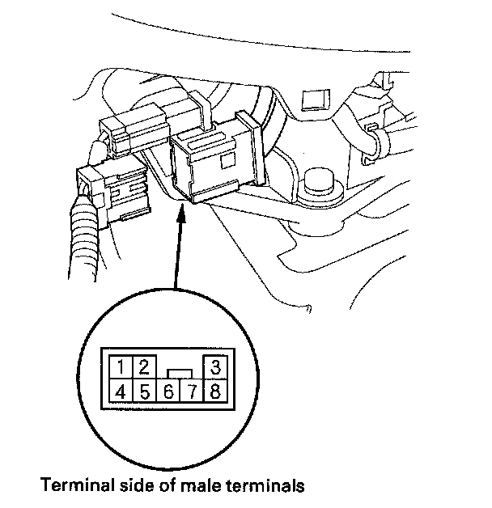

Park Pin Switch Test
Park Pin Switch Test1. Remove the driver's center console trim.
2. Disconnect the transmission gear selection switch/park pin switch/A/T gear position indicator panel light connector.

3. Shift the shift lever into the P position, and check for continuity between transmission gear selection switch/park pin switch/A/T gear position indicator panel light connector terminals No. 1 and No. 4. There should be no continuity.
4. Shift out of the P position, and check for continuity between connector terminals No. 1 and No. 4. There should be continuity.
5. If the park pin switch fails the test, replace the park pin switch and shift lever bracket base as an assembly. The park pin switch, transmission gear selection switch, and A/T gear position indicator panel light harness are not available separately from the shift lever bracket base.
6. Install the driver's center console trim.